1Panoramica e stack
Applicazione PHP monolitica «senza framework», in migrazione graduale da codice procedurale a classi (pattern strangler fig). Nessun build step, nessuna dipendenza Composer in produzione.
src/ (51.000 righe)| Strato | Tecnologia | Note |
|---|---|---|
| Linguaggio | PHP 8.2+ (declare(strict_types=1) nelle classi) | Nessun enum/readonly obbligatorio: compatibile con 8.0 finché serve |
| Web server | Apache + mod_rewrite (.htaccess); Nginx con try_files | Il codice non dipende dal nome della cartella (/didattica, /eventi…) |
| Database | MySQL 5.7+ / MariaDB 10.3+ via mysqli | Un wrapper App\Core\Database sulla stessa connessione; mysqli_report(OFF): errori silenziosi come da progetto |
| Autenticazione | SimpleSAMLphp (SSO Unical, SPID/CIE) + sessione PHP | Classe App\Auth\Saml\AccessoSso |
| Front-end | Bootstrap 5.3 / Bootstrap Italia, Font Awesome 6, jQuery, DataTables, Select2, Chart.js, SortableJS, FullCalendar, TinyMCE, PDF.js | Tutto salvato in assets/vendor: nessun CDN a runtime |
| PDF / Office | Generatore PDF proprio (Documento), Word/Excel via ZipArchive + XML | Nessuna libreria esterna: PDF/A, PAdES, DOCX, XLSX scritti in casa |
Client SMTP interno (SmtpMailer), fallback mail() | STARTTLS/SSL, autenticazione, registro in log_email | |
| Test | PHPUnit 9.6 + suite «prove» (strumenti/prove/esegui.php) | Prove su un database usa-e-getta e, in locale, anche via HTTP |
| Qualità | PHP-CS-Fixer (PSR-12), PHPStan (phpstan.neon.dist) | composer test, composer cs |
2Architettura a strati
Le pagine restano «a scheda» e parlano con le classi di src/ tramite il container. Le classi non conoscono né il container né la sessione: ricevono tutto nel costruttore.
| Cartella | Contenuto | Regola |
|---|---|---|
/ (radice) | 74 pagine pubbliche, config.php, functions.php, middleware.php, cron | config.php e functions.php sono negati dal web server |
admin/ | 56 pagine del pannello; admin_header.php fa autenticazione, RBAC e menu | Ogni pagina «a scheda» ha le azioni POST in cima |
inc/ | 28 file di funzioni per argomento (3.500 righe), caricati da functions.php in ordine fisso | Solo facciate e funzioni non ancora migrate |
src/ | 19 namespace App\… (PSR-4, autoload senza Composer) | Classi con costruttore tipizzato: niente globali |
database/ | schema.sql (23 tabelle di base) | Il resto lo crea assicura_schema() |
strumenti/ | prove, ambiente locale, pacchetti, script | Bloccata al web; non entra nel pacchetto |
modelli_documenti/, uploads/, cache/ | Modelli Word, file caricati, cache e marcatori di schema | uploads/ mai in git; cache/ scrivibile da PHP |
3Il ciclo di una richiesta
Quattro file di bootstrap, sempre nello stesso ordine. Cron e prove caricano solo functions.php.
config.php: apre la sessione con cookieSecure,HttpOnly,SameSite=Lax; imposta gli header di sicurezza (HSTS, CSP, X-Frame-Options…); legge.env; apre$conn(mysqli).functions.php: includeinc/*.phpin ordine fisso, carica l'autoload PSR-4 (src/autoload.php), avvia il container (App::avvia($conn)) e chiamaassicura_schema().middleware.php(solo pagine protette):sync_sso_user($conn)ricollega l'utente dalla sessione SSO; se manca, reindirizza asaml_login.php?redirect=…; poi espone$u_id,$u_ruolo,$is_full_admin,$user_info.admin/admin_header.php(pannello): autentica, calcola i permessi ($puo_fsl,$puo_didattica_tutto,$is_full_admin…), disegna menu e barra superiore.
Una pagina tipica (schema)
<?php
require_once 'middleware.php'; // login + $user_info
$serv = \App\Core\App::get(\App\Didattica\ServizioPratiche::class); // dal container
if ($_SERVER['REQUEST_METHOD'] === 'POST') { // azioni in cima
csrf_verify($_POST['csrf_token'] ?? '');
$err = $serv->invia($_POST, $user_info);
flash_set($err ?? 'Pratica inviata.', $err ? 'danger' : 'success');
header('Location: pratiche.php'); exit; // PRG: redirect + exit
}
$elenco = $serv->dello($user_info); // dati
require_once 'header.php'; ?> <!-- HTML sotto -->false/[]/null (nessuna eccezione), come nel codice storico. Le classi nuove validano gli input e restituiscono messaggi d'errore come stringa (?string) o Esito.4Routing, aree e layout
Non c'è un router PHP: contano il file system e un .htaccess. Le aree create da pannello non generano file.
- URL puliti:
/area_personale→area_personale.phpse il file esiste; nel pannelloadmin/x→admin/x.php. - Aree dinamiche: una riga di
pagine_eventi(slug,tipo_area:fsl,eventi,gruppi,calendario) è servita daarea.phptramite regola di rewrite; gli slug che coincidono con file reali sono rifiutati. - Motore dei layout:
master_template.php(≈ 2.500 righe) disegna la pagina di un'area con uno di otto layout:grid,list,advanced_list,calendar,timeline,agenda,gruppi,progetti. Le aree di tipocalendarioincludonocalendario_area.php. - Moduli del pannello:
MODULI_PORTALE(inc/sezioni.php) elenca cinque moduli (orientamento,fsl,calendari,didattica,portale);PAGINE_MODULOassegna ogni pagina al suo modulo. - Pagine a schede:
admin/didattica.phpprepara i dati comuni e includedidattica_<scheda>.phpdue volte, con$fase = 'azioni'e poi'vista'.
# .htaccess (estratto)
Options -Indexes -MultiViews
<Files "config.php"> Require all denied </Files>
<FilesMatch "^\.env"> Require all denied </FilesMatch>
RewriteEngine On
RewriteRule (^|/)vendor/ - [F,L]
RewriteRule ^(admin/.*)$ $1.php [NC,QSA,L] # admin senza estensione
# file o cartella esistenti: si servono così; poi /nome -> nome.php; infine area.php?slug=…
pagine_eventi) gestite da admin/aree.php.
layout_template, colori e regole.5Core: container, database, configurazione
Poche classi, tutte in App\Core. Le dipendenze si passano nel costruttore; il container le risolve da solo (autowiring).
| Classe | Ruolo | API principale |
|---|---|---|
Container | Dependency injection minimale, senza librerie. Servizi creati una volta e condivisi; rileva le dipendenze circolari. | set($id, fn), istanza($id, $obj), get(Classe::class), has() |
App | Ponte per il codice procedurale: un container per connessione (WeakMap<mysqli, Container>). | avvia($conn), get(X::class), per($conn)->get(X::class) |
Database | Wrapper sulla connessione mysqli del portale, solo prepared statement. Tipi inferiti: int/bool → i, float → d, resto → s. | righe(), riga(), valore(), esegui(), inserisci(), comando(), transazione(), grezza() |
Config | Valori dal file .env (righe che iniziano con ; o # ignorate). | daFile(), testo(), intero(), booleano(), ha() |
Sito | Radice su disco e indirizzo pubblico (calcolato o da URL_SITO per i cron). | radice(), urlBase() |
Orologio | Interfaccia dell'ora corrente: nei test si usa un orologio fisso. | adesso(): DateTimeImmutable |
Esito | Risultato di un'operazione (ok / errore con messaggio). | ok(), errore(), comeCoppia() |
Esempi
// Una classe riceve le dipendenze: il container le trova da sola
final class ServizioMessaggiConvenzione
{
public function __construct(
private ConvenzioneCompilataRepository $compilate,
private MessaggiConvenzioneRepository $messaggi,
private NotificheConvenzioni $notifiche
) {}
}
// Dalle pagine / facciate procedurali
$srv = \App\Core\App::get(ServizioMessaggiConvenzione::class);
$srv = \App\Core\App::per($conn)->get(ServizioMessaggiConvenzione::class); // per un'altra connessione (cron, prove)
// Database: prepared statement, tipi inferiti
$righe = $db->righe('SELECT * FROM uffici_persone WHERE ufficio_id = ? AND email = ?', [$id, $email]);
$nuovoId = $db->inserisci('INSERT INTO uffici (nome, ambito) VALUES (?, ?)', [$nome, 'dipartimento']);
$db->transazione(fn () => $this->spostaTutto());Quando un servizio ha bisogno di un'implementazione diversa si registra nella Registrazione del namespace (scoperta da App):
final class Registrazione
{
public static function registra(Container $c): void
{
$c->set(AuleTurni::class, static fn (Container $c): AuleTurni => $c->get(ServizioAuleTurni::class));
}
}6Convenzioni di codice
Ogni modulo segue lo stesso schema, e i nomi sono in italiano (dominio) per restare leggibili a chi lavora con gli uffici.
| Suffisso / pattern | Cosa fa | Esempio |
|---|---|---|
*Repository | Accesso ai dati di un aggregato. Nessuna regola di dominio. | PraticaRepository, UfficiRepository, ConvenzioneCompilataRepository |
Servizio* | Regole di dominio e orchestrazione. Restituisce ?string (errore) o dati; non produce HTML. | ServizioConvenzioneFirmata, ServizioUffici, ServizioIter |
Vista/* | HTML di blocchi riusati (estratto dalle pagine). | PaginaAttestati, FlashVista |
Notifiche* | Preparano i dati delle email di un modulo e le spediscono con i modelli del catalogo. | NotificheConvenzioni, NotifichePratiche |
Costanti | Costanti di dominio del modulo (stati, tipi, cartelle). | Fsl\Costanti::ITER_PROTOCOLLATA |
Registrazione | Registra nel container i servizi che non si risolvono da soli. | Risorse\Registrazione |
| Facciata procedurale | Funzione di inc/ che inoltra a una classe. Resta finché esistono chiamanti legacy. | db_righe() → Database::righe() |
- Strategia strangler fig: si sposta un modulo alla volta (query → repository, regole → servizi, viste per ultime) lasciando le pagine funzionanti. Il piano è in
MIGRATION_PLAN.md. - Le classi di
src/non usano maiApp: è un ponte per le pagine, destinato a sparire con l'ultimo codice procedurale. declare(strict_types=1)ovunque,finalper default, costruttori con promoted properties.- Soglia di sicurezza: ogni cambiamento lascia verdi tutte le prove (
strumenti/prove/esegui.php).
7Autenticazione, ruoli e permessi
Tre livelli di identità (SSO, SPID/CIE, link/password) e un RBAC a ruoli + perimetri.
Identità
| Modo | Chi | Come |
|---|---|---|
| SSO di Ateneo | Studenti, docenti, PTA | saml_login.php → AccessoSso::accedi() (SimpleSAMLphp); sync_sso_user() crea/aggiorna l'utente, riconosce il tipo da matricola_studente / matricola_dipendente; dopo «Esci» nessun accesso automatico (CookieUscito) |
| SPID / CIE | Esterni; conferma lettere di tutorato | Metodo e livello letti da attributi e contesto SAML (metadati_accesso_saml()); INCARICHI_SOLO_SPID_CIE=1 |
| Link personale con token | Scuole, aziende, relatori, Direttore | Token casuale (random_bytes) in tabella; pagine come convenzione_online.php?t=, firma_pratica.php; il Direttore apre il suo link e accede |
| Password dedicata | Esterni sui verbali | verbali_accessi (hash password_hash), sessione separata, rate limit; pagina con PAGINA_SENZA_SSO |
Ruoli e perimetri
| Elemento | Dettaglio |
|---|---|
Ruoli (ruoli) | 1 Super Amministratore · 2 Gestore Area/Evento · 3 Studente · 4 Docente/Dipendente · 5 Ospite/Esterno; più utenti.ruoli_secondari (CSV) |
Moduli (MODULI_PORTALE) | Si abilita un utente a uno o più moduli (ServizioAbilitazioni::haModulo()) |
Perimetri (abilitazioni_ambito) | tutta l'area · tutti i progetti · tutti gli eventi · attività scelte · FSL (tutto / solo convenzioni / solo scuole) |
Abilitazioni in attesa (abilitazioni_attesa) | Date a chi non ha ancora fatto accesso: si attivano al primo login con quell'email |
Uffici (uffici, uffici_persone) | Appartenere a un ufficio dà accesso alle pratiche dell'ufficio; i compiti (pratiche, sedute, ricevimento, bandi) aprono il pannello Didattica |
| Flag calcolati | $is_full_admin, $puo_fsl, $puo_fsl_convenzioni, $puo_didattica_tutto, utente_operatore_ufficio()… in admin_header.php |
// Direzione: chi firma ora (vice se «Direttore assente»)
$dir = App::get(\App\Uffici\Direzione::class);
$dir->chiFirma(); // ['nome'=>…, 'email'=>…, 'cf'=>…] (cf dall'utente collegato)
$dir->puoFirmare($utente); // email o codice fiscale della persona in carica
$dir->puoImpostareAssenza($utente); // Direttore, vice, segreteria, amministratoriDifese di base
csrf_field()/csrf_verify()(classeAuth\Csrfsulla sessione) su ogni POST e AJAX.check_rate_limit($conn, $endpoint, $max, $finestra)(LimiteRichieste+rate_limit_attempts) per IP sugli endpoint pubblici.- Prenotazioni anonime: CAPTCHA interno (
CaptchaPrenotazione), campo trappola, limite per IP. nega_accesso()(RispostaHttp::negaAccesso) per ogni risorsa che non appartiene all'area/ufficio dell'utente.

admin/utenti.php).
admin/uffici.php, Direzione).8Database e migrazioni automatiche
Non esistono script SQL da lanciare dopo un aggiornamento: lo schema si adegua da solo alla prima richiesta.
Core\Schema\Definizioni:tabelle()(CREATE TABLE IF NOT EXISTS),colonne()(ALTER … ADD COLUMNse manca),tipi()(correzioni di tipo per database vecchi).Core\Schema\Migrazioni::aggiorna(): se esistecache/schema_v<VERSIONE>.oknon fa nulla; altrimenti crea tabelle e colonne, poidatiDiPartenza()(seed, migrazioni di dati) e scrive il marcatore. OggiVERSIONE = 101.- Si alza
VERSIONEogni volta che si toccaDefinizionio i dati di partenza. - Le migrazioni di dati sono idempotenti con una guardia. Esempio:
migraUffici()copia le 4 tabelle storiche negliuffici/uffici_personeunificati una sola volta (finché non esiste l'ufficiodirezione), preservando gli id e introducendoop_id, il numero stabile con cuipratiche.assegnata_aidentifica l'operatore. - Il marcatore è condiviso tra database diversi sullo stesso codice: dopo un bump, su un secondo database va cancellato per rilanciare la migrazione.
// Definizioni::colonne() — aggiunge la colonna solo se manca
'verbali_accessi_log' => [
'utente' => "ADD COLUMN utente VARCHAR(150) DEFAULT ''",
],
// Migrazioni::datiDiPartenza() — guardia per eseguirla una volta
$giaFatto = (int) $this->db->valore("SELECT COUNT(*) FROM uffici WHERE chiave = 'direzione'") > 0;
if (!$giaFatto) { /* copia uffici, persone, uffici di Ateneo e remap dei bandi */ }Le tabelle per dominio
| Dominio | Tabelle principali |
|---|---|
| Utenti e accessi | ruoli, utenti, abilitazioni_ambito, abilitazioni_attesa, log_accessi, log_attivita (audit), log_email, rate_limit_attempts |
| Aree, eventi, prenotazioni | pagine_eventi, sottocategorie, eventi, progetti_dettagli, turni, prenotazioni, campi_form, messaggi_prenotazioni, partecipanti_prenotazione, sondaggi*, avvisi_* |
| Portale | configurazione_portale, slide_home, menu_voci, impostazioni_sistema, template_email, copie_configurazione, riepilogo_persone |
| Anagrafi | scuole, personale_ateneo, personale_modifiche, anagrafe_strutture, corsi_studio, insegnamenti, ateneo_cds, ateneo_insegnamenti* |
| Uffici | uffici, uffici_persone (+ le 4 tabelle storiche, non più usate), operatori_sostituzioni |
| Didattica | didattica_moduli, pratiche, pratiche_eventi, pratiche_firme, pratiche_conferme, pratiche_operatori, didattica_consigli*, didattica_sedute*, didattica_convocazioni, archivio_organi, verbali_accessi* |
| FSL e convenzioni | convenzioni_scuole, convenzioni_compilate, convenzioni_messaggi, convenzioni_tesi, valutazioni_fsl |
| Tutorato | tutorato_bandi, tutorato_incarichi, tutorato_eventi, tutorato_registro, tutorato_dichiarazioni, tutorato_accessi_dati |
email_modelli (solo le modifiche ai testi: senza riga vale il testo originale del catalogo) | |
| Risorse | risorse, risorse_orari, risorse_chiusure, prenotazioni_risorse, prenotazioni_risorse_attesa, risorse_responsabili, risorse_uffici, risorse_contatori*, risorse_diario, risorse_scadenze |
*_json: didattica_moduli.campi_json, iter_json, domanda_json, verbale_json; pratiche.risposte_json; convenzioni_compilate.dati_json.9I moduli e le classi principali
Ogni namespace di src/ è un modulo del portale, con le sue pagine e le sue tabelle.
| Namespace | Responsabilità | Classi chiave | Pagine |
|---|---|---|---|
Core | Container, DB, config | Container, App, Database, Config, Sito, Schema\Definizioni, Schema\Migrazioni | — |
Auth | Utenti, sessione, SSO, abilitazioni | Saml\AccessoSso, Sessione, Csrf, LimiteRichieste, ServizioUtenti, Abilitazioni\ServizioAbilitazioni | saml_login.php, admin/utenti.php |
Anagrafi | Persone, scuole, corsi, insegnamenti di Ateneo | ClientApiAteneo, SincronizzazioneAnagrafe, ServizioPersone, ServizioScuole, ServizioCatalogo, PermessiGestori | admin/anagrafe_*.php, persona.php |
Eventi | Eventi, progetti, turni, agenda, report | ServizioEventi, ServizioProgetti, ServizioTurni, ServizioAgenda, ServizioReport, ServizioSeminari | admin/eventi.php, progetti.php, agenda.php |
Iscrizioni | Prenotazioni dei turni, area personale, lista d'attesa | ServizioPrenotazioni, ServizioDisponibilita, ServizioListaAttesa, ServizioCheckin, ServizioAreaPersonale, CaptchaPrenotazione | area.php, area_personale.php |
Iscritti | Gestione iscritti lato pannello, cron, badge, scanner | ServizioIscritti, ServizioCron, ServizioScanner, ServizioBadge, ServizioEmailMassiva, ServizioFormBuilder, ServizioMessaggi, CasellaMessaggi | admin/iscritti.php, admin/messaggi.php, admin/api_unread.php, scanner.php |
Attestati | Attestati e elenchi degli studenti | ServizioAttestati, ElencoStudenti, DatiAttestato, RegoleClasse | elenco_studenti.php, stampa_attestato.php, verifica_attestato.php |
Fsl | Formazione Scuola Lavoro e convenzioni con le scuole | ServizioConvenzioneOnline, ServizioConvenzioneFirmata, ServizioFirmaDirettore, ServizioMessaggiConvenzione, AllegatoAPdf/Word, ProgrammaFsl, ServizioDocumentiClasse | convenzione_online.php, firma_convenzione.php, admin/fsl.php |
ConvenzioniTesi | Convenzioni di tesi con enti e aziende | ServizioConvenzioniTesi, ConvenzioneTesiRepository, ModelloConvenzione, NotificheConvenzioniTesi | convenzione_tesi.php, richiedi_convenzione_tesi.php |
Tirocini | Tirocini curriculari: aziende (report TSP) e laboratori interni | ServizioAziende, ServizioLaboratori, LettoreFoglio (xlsx/csv), Province | tirocini_aziende, tirocini_laboratori; pagine tirocini.php (dopo l'accesso), admin/tirocini.php |
Didattica | Moduli, pratiche, iter, firme, consigli, sedute, verbali, archivio | ServizioPratiche, ServizioIter, FirmaPratica, ServizioFlussoConvalide, ServizioMarcheBollo, ServizioSedute, ServizioConvocazioni, ArchivioVerbali, ServizioVerbaliPubblici, ModelliPratiche, DomandaPdfa | modulo.php, pratiche.php, verbali.php, admin/didattica*.php |
Tutorato | Bandi, lettere, firme, registro, pagamenti | ServizioIncarichi, ServizioRegistroTutorato, ServizioPagamenti, ServizioImportBando, FirmaRemotaAruba, VerificaPdfFirmato, Compenso | incarico.php, firma_incarico.php, registro_tutorato.php, pagamenti_tutorato.php |
Email | Testi delle email modificabili dal pannello, con segnaposto | ModelliEmail, InvioEmail, CatalogoEmail e i cataloghi dei moduli (CatalogoDidattica, CatalogoConvenzioni, CatalogoRisorse, CatalogoEventi, CatalogoSistema) | admin/email.php |
Risorse | Aule, laboratori, auto: prenotazioni a slot | ServizioRisorse, ListaAttesaRisorse, ServizioResponsabiliRisorse, ServizioDiarioBordo, ServizioContatoriRisorse, ServizioScadenzeRisorsa | calendario_area.php, risorse_responsabile.php, diario_bordo.php |
Uffici | Uffici di Dipartimento e Ateneo, Direzione | UfficiRepository, ServizioUffici, Direzione | admin/uffici.php, direttore_assente.php |
Portale | Home, menu, cruscotti, guide, riepiloghi | CruscottoDirettore, DaFarePersona, RiepilogoPersone, SospensionePromemoria, GuidePerRuolo, MenuRepository, OrganizzazioneProposta | index.php, cruscotto_direttore.php, guida.php |
Sistema | Controlli, backup, impostazioni | ControlloSito, FileEnv, ImpostazioniSistemaRepository, Backup\VerificaBackup | admin/sistema.php, admin/cron_backup.php |
Infrastructure | Servizi tecnici condivisi | Mail\SmtpMailer, Pdf\Documento, Pdf\FirmePades, Pdf\TestoPdf, Documenti\Word/Excel, Storage\Upload, Sicurezza\Cifratura, Audit\AuditLog | — |
Ateneo, Avvisi, Sondaggi | Uffici di Ateneo (wrapper), avvisi per email, questionari | ServizioUfficiAteneo, ServizioAvvisi, ServizioSondaggi | avvisi.php, sondaggio.php |
Dalla schermata alle classi
Le stesse pagine viste dall'utente, con le classi che le servono.

agenda.php → ServizioAgenda, AgendaRepository, FonteEventiAgenda; agenda_ics.php per il calendario.
master_template.php → ServizioEventi, ServizioTurni, ServizioDisponibilita, ServizioPrenotazioni.
area_personale.php → ServizioAreaPersonale, AreaPersonaleRepository, DaFarePersona.
verifica_attestato.php → ServizioAttestati, AttestatoRepository, DatiAttestato.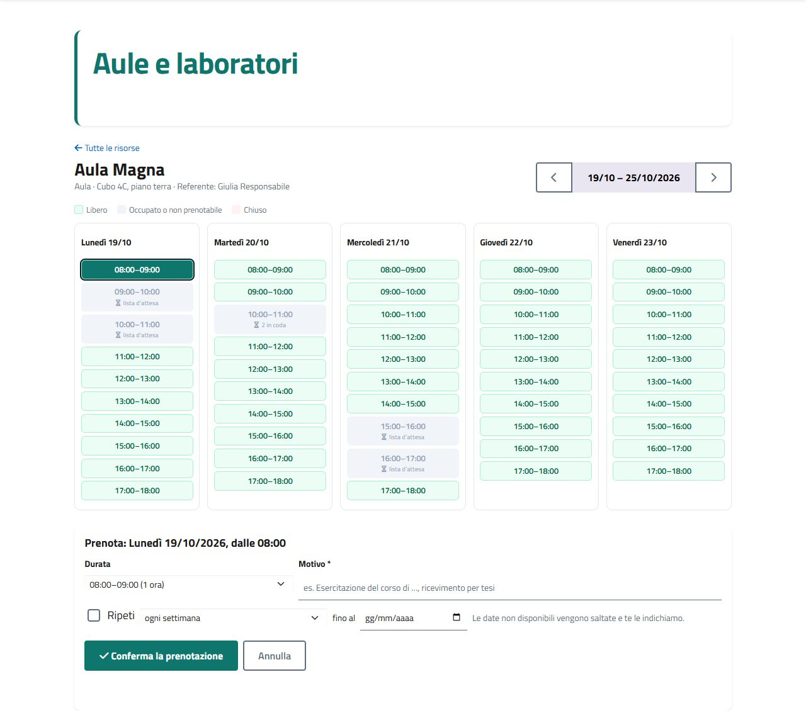
calendario_area.php → CalendarioRisorse, ServizioRisorse, ListaAttesaRisorse.
convenzione_online.php → ServizioConvenzioneOnline, PrecompilazioneConvenzione, LogoScuola.
ModelliConvenzione, AllegatoAModello → AllegatoAPdf e AllegatoAWord.
modulo.php → CampiModulo, HtmlCampi, LetturaRisposte, ServizioPratiche::crea().
admin/didattica_pratiche.php → ServizioFlussoConvalide, ServizioMarcheBollo, FlussoPratica.
admin/didattica_sedute.php → ServizioSedute, ServizioPuntiSeduta, DecisioniSeduta, TestoVerbale.
ArchivioVerbali, ScansioneArchivio, OrganiArchivio, TestoPdf.
admin/tirocini.php → ServizioAziende::importa() (report TSP, solo la «x»), LettoreFoglio, Province.
accesso_richiesto.php → richiedi_accesso() (401 + pulsante verso saml_login.php?redirect=).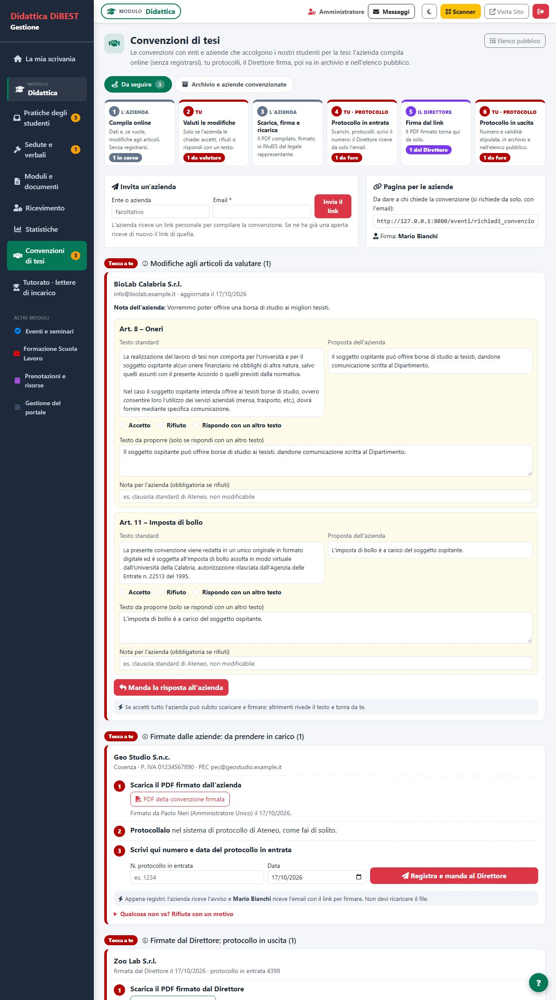
admin/convenzioni_tesi.php → ServizioConvenzioniTesi, ModelloConvenzione.
dichiarazione_tutorato.php → ServizioDichiarazione, Cifratura (IBAN).
diario_bordo.php → ServizioDiarioBordo, DiarioBordoRepository.
cruscotto_direttore.php → CruscottoDirettore (dieci gruppi, ognuno isolato in un try).
admin/iscritti.php → ServizioIscritti, FiltriIscritti, RisultatoMassivo.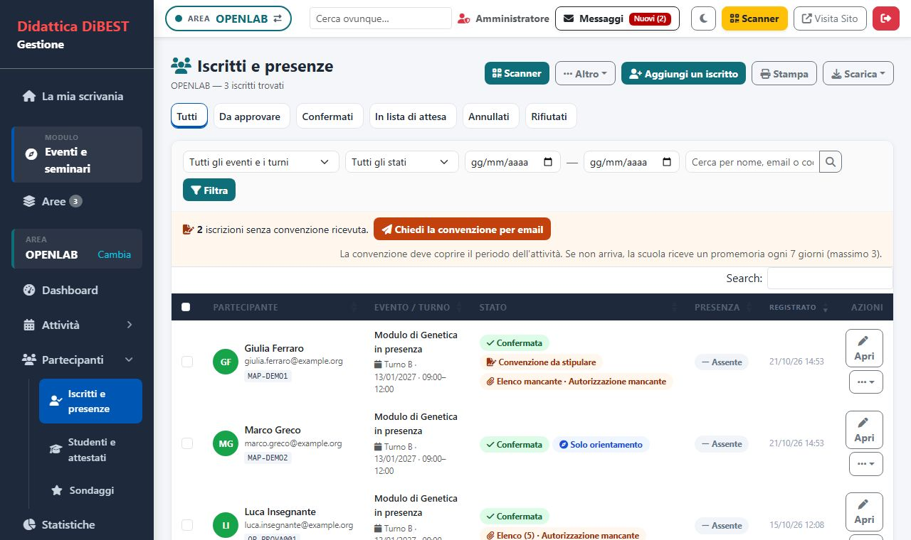
ServizioIscritti::soloOrientamento() → prenotazioni.solo_orientamento; nelle query il campo fsl diventa IF(pr.solo_orientamento = 1, 0, pd.convenzione).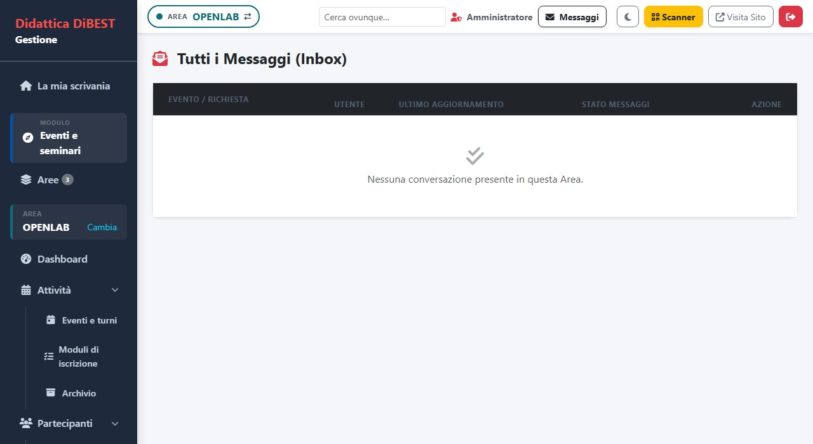
admin/messaggi.php → CasellaMessaggi (permessi per area, MessaggiRepository, MessaggiConvenzioneRepository), contatore in admin_header.php e api_unread.php.
admin/fsl.php?tab=stipulare → ServizioConvenzioniScuole::destinatari(); «Chiedi la convenzione» (ServizioIscritti::richiediConvenzione) e «Scrivi alla scuola» (ServizioMessaggi::inviaDaIscritti).
ServizioFormBuilder, FormBuilderRepository, tabella campi_form.
StatisticheRepository, Chart.js, esportazione con Excel.
MenuRepository, ServizioMenu, CatalogoPagineMenu, ordinamento con SortableJS.
SincronizzazioneAnagrafe, ClientApiAteneoHttp, PersonaRepository.
AuditLog, RegistroAuditRepository, registra_log_audit().
UfficiRepository, ServizioUffici (regole), vista admin/uffici.php.
admin/risorse.php → ServizioGestioneRisorse, ServizioResponsabiliRisorse, ServizioCampiRisorsa.
ServizioScuole, ScuolaRepository, tabella scuole (open data del Ministero).10Flussi chiave
Le macchine a stati dei processi principali. Gli stati sono costanti nel modulo; le transizioni stanno nei servizi, mai nelle pagine.
Convenzione FSL (convenzioni_compilate.stato_iter)
ServizioConvenzioneFirmata::carica()valida conVerificaFirme(solo PAdES, nessuna modifica dopo la firma), salva il file in cartella bloccata, avvisa l'ufficio e manda la ricevuta.protocolloIngresso()registra il numero, manda il link al Direttore in carica (Direzione::chiFirma());ServizioFirmaDirettorefirma con Aruba o accetta il PDF firmato (stesso documento + una firma).completa()registra la convenzione (convenzioni_scuole), conferma le prenotazioni in attesa e avvisa scuola e docenti.ServizioMessaggiConvenzione: promemoria «carica il PDF» (max uno ogni 24 ore), messaggi e risposte (convenzioni_messaggi).
Casella dei messaggi (CasellaMessaggi)
aree()/filtroArea()applicano le regole diadmin_header.phpa ogni area: gestore dell'area o del modulo = nessun filtro, gestore di singole attività =AND e.id IN (…), nessun diritto = area esclusa.conversazioni()unisce le prenotazioni di tutte le aree (messaggi_prenotazioni) e le conversazioni con le scuole (convenzioni_messaggi, solo se la scuola ha scritto almeno una volta e per chi lavora le convenzioni FSL), ognuna col modulo (Sezioni::moduloDiArea).nonLetti()alimenta il contatore del pulsante eapi_unread.php(polling ogni 30 secondi).- Archivia:
prenotazioni.msg_archiviata_ileconvenzioni_compilate.msg_archiviata_il(schema v85). Una conversazione è archiviata finché la data è uguale o successiva all'ultimo messaggio dell'altra parte: se scrive ancora, torna in casella senza altre scritture.
Pratica studente (didattica_moduli.iter_json)
L'iter è un array di passi. Ogni passo è un ufficio (id o chiave), un marcatore ("protocollo", "@cdl", "@segreteria") o un oggetto tipizzato:
["protocollo", "@cdl", "@segreteria"] // iter semplice
[{"t":"persona","campo":"Relatore","gg":3}, // firma/conferma di una persona del modulo
{"t":"ufficio","u":"protocollo","gg":2,"pagamento":true}, // marche da bollo
{"t":"ufficio","u":"@cdl","documento":true}, // l'ufficio carica un documento
{"t":"conferma","campo":"Docente"}, // conferma docenti (senza firma digitale)
{"t":"direttore","gg":4}] // firma PAdES del DirettoreServizioIter::definizione() normalizza i passi; ServizioFlussoConvalide::trasmettiAlPasso() sposta la pratica verificando le condizioni del passo; PromemoriaPratiche (cron) sollecita dopo gg giorni; FirmaPratica gestisce firme e link; la domanda in PDF/A è prodotta da DomandaPdfa e il testo del verbale da TestoVerbale.
Prenotazioni di eventi e risorse
- Turni:
prenotazioni.stato∈confermata,da_approvare,in_attesa(lista d'attesa),richiesta_conferma(posto offerto, 24 h),annullata,rifiutata; vincoli e regole inServizioRegoleIscrizioni,ServizioVincoli,RegoleFsl. - Risorse:
prenotazioni_risorse.stato∈confermata,da_approvare,rifiutata,annullata; slot calcolati daCalendarioRisorse;ListaAttesaRisorse(coda con finestra di 24 ore, il cronscala()passa al successivo).
Verbali pubblici in sola lettura
puoScaricare($utente) // admin oppure membro dell'ufficio fisso 'verbali_scarico'
accessoDaCredenziali($utente) // accesso virtuale (id 0, ambiti ["*"]) per chi è abilitato
tokenVista($sedutaId) // permesso monouso (10 min) in sessione
consumaToken($t, $sedutaId) // vale una sola volta, per quel verbaleverbali.php ha tre rotte: ?v=ID (visualizzatore: PDF.js disegna le pagine su <canvas> con filigrana; niente toolbar, niente testo selezionabile), ?f=ID&t=TOKEN (legge il PDF, rifiuta Sec-Fetch-Dest: document e un token già usato; Cache-Control: no-store) e ?d=ID (download: 403 senza puoScaricare). Ogni lettura e download va in verbali_accessi_log.
Esportazioni del pannello: ogni elenco si scarica con il menu «Scarica» (pn_scarica()) in Excel, PDF e CSV. Classi in src/Infrastructure/Documenti/: TabellaEsportabile (una tabella), FogliEsportabili (report a più fogli; scaricaDa() rifà in PDF e CSV i fogli dell'ultimo Excel::crea()). Per le tabelle già nella pagina, pn_scarica_tabella() + assets/js/esporta_tabella.js mandano le righe visibili a admin/esporta_tabella.php.
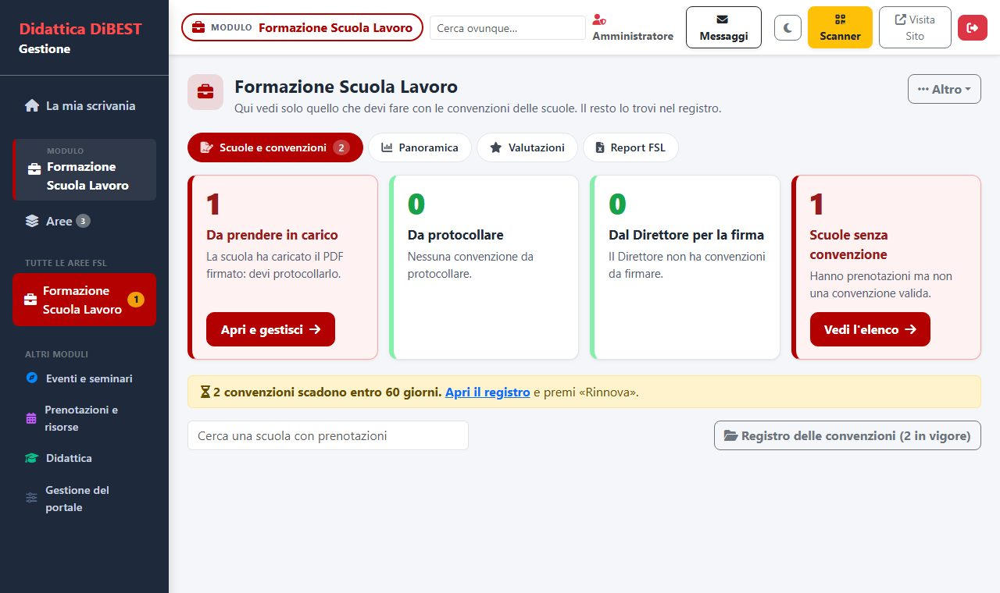
admin/fsl.php, tab=home): schede «cosa devo fare» (Pannello::compiti), esportazioni con TabellaEsportabile.
admin/fsl.php?tab=iter): le fasi corrispondono agli stati.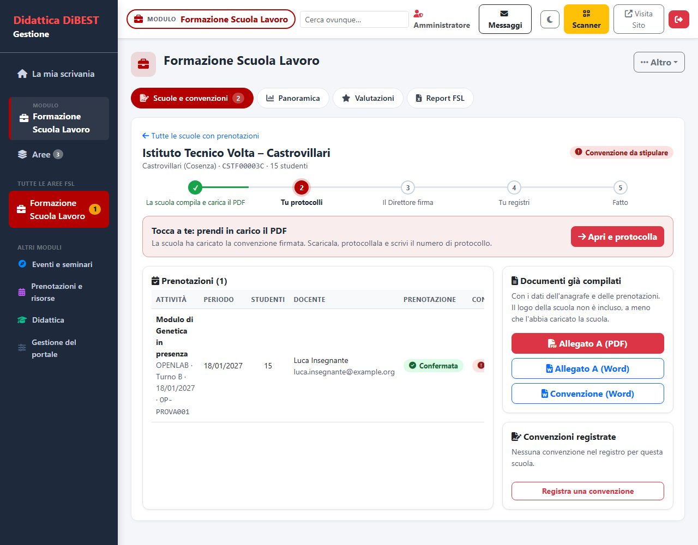
tab=scuola): i cinque passi dello stato_iter.
verbali.php in sola lettura (viste «Per corso» e «Cerca» disegnate da JavaScript su un array JSON).11Documenti, PDF, Office e firme digitali
Nessuna libreria esterna: PDF, DOCX e XLSX sono costruiti dal codice. Una scelta di portabilità (niente Composer in produzione) e di controllo sui formati richiesti dagli uffici.
| Componente | Cosa fa |
|---|---|
Pdf\Documento (alias PdfSemplice) | Generatore PDF: pagine, paragrafi, tabelle, fasce, riquadri, font TrueType (TrueType). Usato per domande in PDF/A (DomandaPdfa), attestati, estratti dei verbali. |
Pdf\FirmePades / VerificaFirme | Legge le firme PAdES di un PDF (ByteRange, /Contents, catena CMS) e verifica integrità e titolare; usata da convenzioni, lettere di tutorato, verbali. |
Tutorato\FirmaRemotaAruba | Firma remota (ArubaSignService SOAP) con utente, password e OTP; disponibile() dipende dalle variabili ARUBA_* nel .env. |
Pdf\TestoPdf | Estrae il testo da PDF digitali per la ricerca nell'archivio verbali. |
Documenti\Word | Costruisce .docx (ZIP di XML) partendo dai modelli in modelli_documenti/ e assets/modelli/ (segnaposto sostituiti); usata da Convenzione, Allegato A (AllegatoAWord), verbali (EsportazioneVerbale), lettere di incarico. |
Documenti\Excel | Costruisce .xlsx da array di fogli (report, esportazioni). |
Storage\Upload | Salvataggio di file caricati: estensione e MIME ammessi, nome casuale, cartellaProtetta() scrive un .htaccess che nega il web. |
Sicurezza\Cifratura | Cifra i dati sensibili (IBAN) con la frase CIFRATURA_CHIAVE; cifra()/decifra(). |
Audit\AuditLog + registra_log_audit() | Traccia delle azioni di gestione in log_attivita. |
uploads/ con .htaccess che nega l'accesso: si scaricano solo passando da una pagina PHP che controlla il permesso (invia_file_scaricabile() → Download::invia()).12Email
Un'interfaccia (Mailer) e due implementazioni: SMTP e mail().
interface Mailer {
public function invia(string $a, string $oggetto, string $corpoHtml, ?string $colore = null, array $allegati = []): bool;
public function ultimoErrore(): string;
}SmtpMailer: STARTTLS/SSL, autenticazione, controllo di ogni risposta del server, registro inlog_email(accettata/rifiutata). Password SMTP cifrate nel database.MailerDaFunzione: usa la funzioneinviaNotificaEmail()(ambiente di prova e fallback amail()).ImpaginatoreEmail: layout HTML con il colore dell'area e testo a contrasto calcolato.- I testi stanno nel catalogo (
src/Email/Catalogo*.php: un modello per ogni email, con gruppo, quando parte, a chi, segnaposto e testo originale) e si modificano dalla paginaadmin/email.php(Testi delle email); la tabellaemail_modellitiene solo le modifiche.ModelliEmailcompone oggetto e testo (formato semplice con{{segnaposto}}sempre ripuliti, oppure HTML con{NOME}per le email degli eventi) eInvioEmaille spedisce con il colore del modulo. - Le classi
Notifiche*e i servizi preparano i dati e chiamanoInvioEmail; nessuna classe scrive il testo di un'email (lo controlla il testNessunaEmailScrittaNelCodiceTest). Le email non bloccano la pratica se falliscono (errore registrato).
13Assistenza, notifiche push e Didacticus
Chat di assistenza con operatori (src/Assistenza/), notifiche a finestrella (Web Push in PHP puro, src/Assistenza/Push/) e l'assistente virtuale a regole (src/Assistenza/Didacticus/). Nessun servizio esterno, nessuna libreria da installare. Schema v86–v89.
Dati
| Tabella | Contenuto |
|---|---|
assistenza_conversazioni | una chat: canale (utente con login / esterno con link personale token), argomento, contesto (pratica/prenotazione), stato bot → nuova → assegnata → chiusa, operatore, tempi (prima_risposta_il, passata_il), risolta_da_bot, bot_mancate, valutazione, presenze e orari degli avvisi |
assistenza_messaggi | messaggi (da utente · operatore · bot · sistema; tipo messaggio · nota interna), extra JSON per link, allegati e suggerimenti di Didacticus |
push_sottoscrizioni | i recapiti dei browser (endpoint unico per impronta SHA-256, chiavi, ruolo, preferenze: silenzia, solo le mie chat) |
didacticus_voci | la base di conoscenza: argomento, titolo, domande, parole chiave, risposta, link e allegati (JSON), solo_login, proponi_operatore, attiva, contatori usi/utile/non_utile |
didacticus_mancate | domande senza risposta o la cui risposta non è bastata (da trasformare in voci) |
didacticus_pagine | v100: pagine pubbliche di unical.it (solo https) lette ogni settimana, con titolo, testo, esito e data dell'ultima lettura: fonti del modello linguistico |
didacticus_vettori | v101: un vettore di significato per voce (numeri a 32 bit in base64) con l'impronta del testo da cui è stato calcolato; si ricalcola solo se la voce cambia |
impostazioni_sistema | colonne assistenza_attiva, assistenza_orari (JSON giorno → fasce) e didacticus_* (acceso, saluto, soglia, avatar, seminato) |
Classi
| Classe | Compito |
|---|---|
ServizioAssistenza | apre le chat (apriDaUtente, apriDaEsterno), scrive, prende in carico, passa, chiude, riapre, valuta; gestisce Didacticus (rispondiBot, passaAOperatore, azioneBot); limiti anti-abuso (per IP, email, utente, messaggi in 10 minuti) |
ConversazioniRepository, MessaggiAssistenzaRepository | accesso ai dati; gli orari arrivano dal servizio (Orologio iniettato), mai da NOW() |
OperatoriAssistenza | operatori = persone dell'ufficio fisso assistenza + amministratori; destinatari degli avvisi (se l'ufficio è vuoto, gli amministratori) |
NotificheAssistenza | email (modelli in CatalogoAssistenza) e finestrelle; un guasto delle notifiche non ferma mai la chat |
ChatApi | le risposte JSON delle pagine (casella, chat dell'operatore, chat di chi chiede aiuto): permessi controllati dall'endpoint, dati qui |
OrariAssistenza | servizio acceso/spento e fasce orarie («09:00-13:00, 14:00-16:00»), avviso fuori orario |
ConservazioneAssistenza | dopo 12 mesi (CONSERVAZIONE_ASSISTENZA_MESI) cancella messaggi, recapiti push e domande senza risposta; nome alle iniziali, email e IP svuotati, link personale invalidato |
Significato, VettoriRepository, ServizioSignificato | embedding (Ollama /api/embed, modello bge-m3) per trovare le voci per significato; spento senza EMB_URL; vettori calcolati dal pannello («Aggiorna ora») e dal cron, mai durante una chat; coseno tra domanda e voci |
ModelloLinguistico | facoltativo e spento di partenza (LLM_URL): modello che scrive la risposta con le sole fonti (voci e brani di pagine di Ateneo), un calcolo alla volta (blocco su file), timeout 45 s, NON_SO e fallback a regole; risposta segnalata come «preparata automaticamente» |
PagineRepository, LettorePagine, ServizioPagine, RicercaPagine | pagine di Ateneo come fonti: solo https del dominio unical.it (niente porte né credenziali), testo estratto senza menu e script, brani di circa 600 caratteri scelti per vicinanza alla domanda; rilettura settimanale dal cron |
StatisticheAssistenza, Contesti | numeri per periodo (argomento, operatore, tempi, utilità, risolte da Didacticus); pratica o prenotazione collegata, solo se della persona |
Notifiche push (Web Push)
Scritte a mano con OpenSSL, senza Composer: CifraturaPush cifra il messaggio come vuole il browser (RFC 8291, aes128gcm; verificata contro il vettore di prova della RFC), ChiaviVapid firma la richiesta (ES256, RFC 8292) con le chiavi del .env (PUSH_VAPID_PUBLIC/PRIVATE/SUBJECT, create una volta con strumenti/genera_chiavi_push.php), InvioPush la spedisce con curl (ClienteHttp è un'interfaccia: nelle prove un finto). Un 404/410 elimina il recapito; dopo 5 errori di fila pure. Il sw.js riceve la notifica e al clic apre la chat giusta. Agli operatori arriva chi scrive e le prime parole; a chi chiede aiuto solo «hai una risposta», senza testo. Senza chiavi VAPID tutto resta com'è e valgono le email.
Didacticus: come decide
Motore confronta la domanda con le voci: normalizza (minuscole, senza accenti, parole vuote tolte), riduce ogni parola a una radice (senza vocale finale, al massimo 5 lettere) e calcola un punteggio 0–100 come somiglianza pesata (peso = rarità della parola tra le voci) con ogni domanda della voce; una parola chiave contenuta nella domanda porta la voce in alto in proporzione a quanta parte della domanda copre; l'argomento scelto dà un piccolo vantaggio. ServizioDidacticus traduce i punteggi: ≥ soglia (predefinita 60, regolabile 20–90) risposta con link, allegati e pulsanti; fino a 12 punti sotto la soglia suggerimenti; altrimenti nessuna (conta una domanda a vuoto: alla seconda di fila la chat passa a un operatore). Saluti, ringraziamenti e «voglio un operatore» sono riconosciuti a parte; una voce riservata a chi accede invita gli esterni ad accedere. Non genera testo e non chiama servizi esterni: dice solo quello che è scritto nelle voci.
stato «bot» -- la persona scrive --> Didacticus risponde (voce, suggerimenti o «non so»)
|-- «Sì, grazie» ................................. chiusa, risolta_da_bot = 1
|-- «Non mi basta» / «operatore» / 2 volte «non so» -> stato «nuova», passata_il, nota interna, email + finestrella agli operatori
'-- un operatore risponde o «Prendo io» ............ stato «assegnata» (passata_il se veniva da Didacticus)Significato e modello linguistico (facoltativi)
Dopo il Motore, se le regole non sono sicure (punteggio sotto la soglia) o lo sono poco (sotto 75), ServizioSignificato confronta la domanda con i vettori delle voci: con somiglianza da 0,62 sceglie la voce (da 0,55 se deve correggere una scelta debole delle regole, che resta tra i «vedi anche»), da 0,50 propone «forse intendevi…». Le soglie si regolano con EMB_SOGLIA e EMB_SOGLIA_SUGGERISCI. Il testo mostrato è sempre quello della voce. Su 20 domande parafrasate trova la voce giusta in 15 casi contro 7 delle sole regole. Se resta incerto e LLM_URL è impostato, ModelloLinguistico può scrivere una risposta con le sole fonti; in prova (Llama 3.2 3B e 1B, Qwen, Phi-4-mini) sul server a 4 core senza GPU è troppo lento e a volte inventa, quindi resta spento.
domanda --> Motore (regole, punteggio 0-100)
|-- sicura (>= soglia e >= 75) ......................... risposta della voce
|-- incerta o debole --> ServizioSignificato::cerca() --> voce per somiglianza (0,62 / 0,55) o suggerimenti (0,50)
|-- ancora incerta e LLM_URL impostato ................. ModelloLinguistico con le sole fonti (spento di partenza)
'-- niente di tutto questo ............................. suggerimenti a regole o «non so» (domanda senza risposta)Pagine e file
| File | Ruolo |
|---|---|
assistenza.php, assistenza_ajax.php | pagina pubblica (anche come finestrella ?pannello=1) e risposte JSON; chat di chi ha il login o, per gli esterni, del link ?t= |
admin/assistenza.php, admin/assistenza_ajax.php, admin/push_ajax.php | casella e chat degli operatori, statistiche, orari; notifiche del browser |
admin/didacticus.php | voci (con link e allegati), domande senza risposta, prova (con la classifica per significato), pagine di Ateneo, impostazioni (stato del significato, «Aggiorna ora»); esportazione Excel/PDF/CSV e importazione CSV |
didacticus_file.php | immagine di profilo e allegati (cartella uploads/didacticus/ chiusa al web, scaricabili solo da qui e solo per le voci attive) |
| Chat che parte da Didacticus | assistenza.php in modalità «avvio» (data-avvio): il saluto è locale finché la persona non sceglie un argomento o scrive; allora assistenza_ajax.php?azione=avvia crea la conversazione (apriDaUtente/apriDaEsterno con $avvio = argomento o testo) salvando il saluto con il nome come primo messaggio. Chi non ha l'accesso passa da nome, email e anti-robot ($_SESSION["assistenza_ospite"]). ?modulo=1 riporta il modulo classico |
| Operatore per corso di laurea | ServizioAssistenza::chiediCorso() chiede il corso (pulsanti bot_corso o testo libero) se OperatoriAssistenza::corsiSeguiti() non è vuoto (corsi indicati nelle persone dell'ufficio Assistenza, uffici_persone.corsi); emailPerCorso() sceglie i destinatari, con ripiego su tutti; la nota interna riporta il corso dichiarato |
assets/js/assistenza-widget.js | il pulsante di Didacticus (il gufo, immagine da didacticus_file.php?avatar=1) con la riga «Ti serve aiuto?»: compare dopo 1,8 s, sparisce dopo 12 s (non torna da sola nella stessa visita, sessionStorage) e si riapre sempre al passaggio del mouse o con la tastiera sul pulsante; la finestrella è la pagina assistenza.php?pannello=1 in un iframe |
assets/js/assistenza-*.js | chat, casella degli operatori, finestrella, iscrizione push (testo sempre via textContent, mai HTML; il Service Worker mette i JS in cache: si cambia ?v= a ogni modifica) |
Prove
strumenti/prove/oop/assistenza.php (chat, operatori, limiti, orari, conservazione), assistenza_push.php e assistenza_push_db.php (cifratura contro la RFC, firma, invio, iscrizioni, preferenze, integrazione con la chat), assistenza_didacticus.php (motore su domande vere, risposte, passaggi all'operatore, domande senza risposta, statistiche). Scenario di dimostrazione e schermate: strumenti/locale/scenario_assistenza.php, schermate_assistenza.php.
13aDisponibilità dei docenti per tesi e tirocini
I docenti indicano dalla loro Area personale se accettano nuovi tesisti e tirocinanti; due pagine pubbliche mostrano i posti con un semaforo che si calcola da solo (src/Disponibilita/).
| Elemento | Compito |
|---|---|
disponibilita_docenti | una riga per docente e per tipo (tesi, tirocinio): accetta, posti, occupati, corsi (codici dall'anagrafe di Ateneo), temi, attività, obiettivi, sede, note, aggiornato_il (v98) |
DisponibilitaRepository | lettura e salvataggio per utente e tipo, elenco pubblico dei docenti che accettano; valida posti e corsi |
Semaforo::di() | verde con almeno due posti liberi, arancione con uno, rosso a zero, grigio se non accetta o se l'ultimo aggiornamento ha più di 90 giorni («da riconfermare»); funzione pura, provata con l'orologio iniettato |
la_mia_disponibilita.php | la pagina del docente: tesi e tirocinio, «Togli dalla pagina pubblica»; tessera «La mia disponibilità» nell'Area personale |
disponibilita_tesi.php, disponibilita_tirocini.php | pagine pubbliche con filtri per ricerca, corso di laurea e «solo con posti», e «Scrivi al docente» |
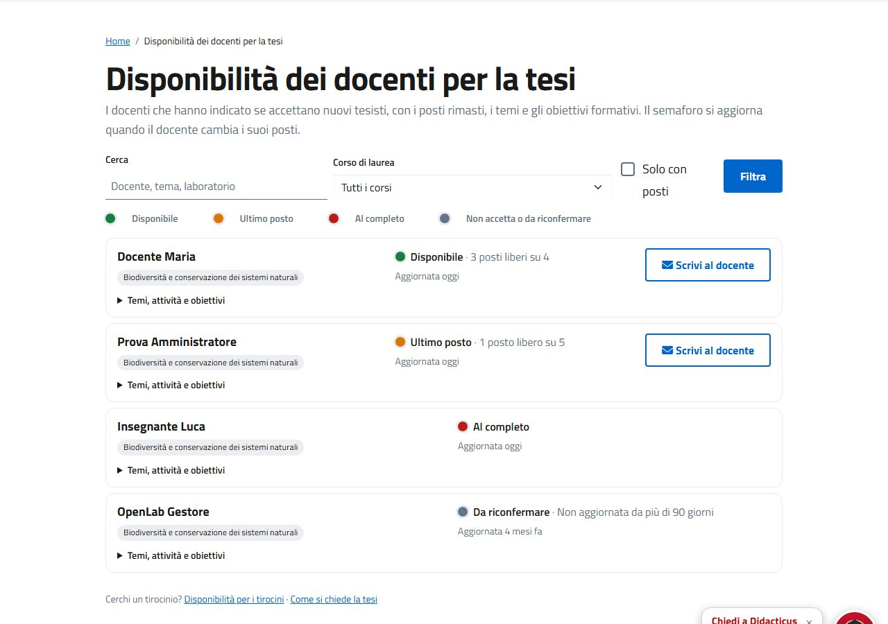
disponibilita_tesi.php.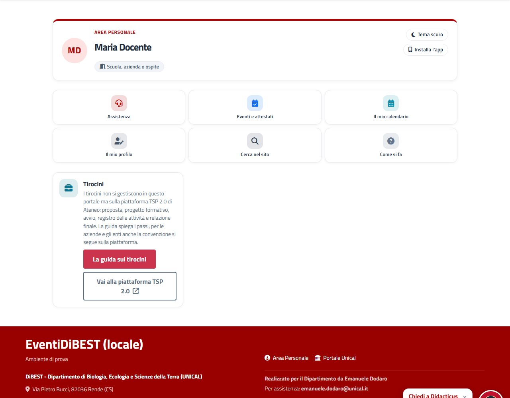
la_mia_disponibilita.php.13bArea personale per profilo
L'area personale mostra i riquadri giusti a chi ha accesso: studente, docente, direttore, personale e uffici, gestore, amministratore, esterno (una persona può averne più d'uno). I riquadri e il loro ordine li sceglie l'amministratore da pannello (Sito › Area personale). Schema v93–v95. L'area è un cruscotto a tessere: ogni tessera è un argomento con le novità in evidenza e porta alla pagina specifica.
Dati
| Tabella | Contenuto |
|---|---|
area_riquadri | un riquadro per riga: chiave (vuota per quelli scritti dall'amministratore, unica per quelli di sistema), titolo, testo, icona, colore, fino a due pulsanti, profili (elenco separato da virgole), ordine, attivo. I riquadri di sistema mancanti si seminano alla migrazione; quelli già presenti (anche spenti o cambiati) non si toccano |
Classi (src/Portale/Area/)
| Classe | Compito |
|---|---|
Profili | i sette profili, i nomi e le icone; da() e inCsv() per l'elenco salvato |
ProfiliPersona | di quali profili fa parte una persona: ruolo, matricola, anagrafe di Ateneo (gruppo), uffici, Direzione, abilitazioni; chi non rientra in nessuno è «esterno» |
CatalogoRiquadri | i riquadri di sistema: tipo speciale (li disegna il codice con i dati della persona) o scheda (titolo, testo e due pulsanti modificabili), profili e ordine di partenza |
RiquadriRepository | elenco per profilo, salvataggio con controlli (titolo, testo, indirizzi, icona, colore), interruttore, su/giù, eliminazione dei soli riquadri personalizzati |
Pagine e file
| File | Ruolo |
|---|---|
area_personale.php | il cruscotto: testata con i profili, filtro ?p= per chi ha più profili, «vedi come» ?come= per l'amministratore, poi la griglia delle tessere nell'ordine scelto. I vecchi indirizzi ?conferma_posto= (link nelle email) e ?cancella_prenotazione= rimandano a miei_eventi.php |
inc/area/<chiave>.php | una tessera per riquadro di sistema (da_fare a tutta larghezza, cruscotto_direttore, direttore_assente, pratiche, assistenza, tutorato_mio, tutorato_registro, tutorato_pagamenti, ricevimento, risorse_responsabile, risorse_prenotate, eventi, profilo, guida); _tessera.php è la funzione area_tessera() (titolo, riga di stato, novità in rosso, pulsanti); _generico.php disegna le schede e i riquadri scritti dall'amministratore; _tutorato_tappe.php le tappe del tutor |
miei_eventi.php | prenotazioni in programma (modifica, annulla, chat, posto liberato), storico e attestati, programma FSL, sondaggi, aule e appuntamenti prenotati, scanner QR |
profilo.php | dati personali, scheda di Ateneo ed email modificabili |
il_mio_tutorato.php | a che punto è ogni incarico del tutor e i suoi documenti |
admin/area_personale.php | pannello: profili con il numero di riquadri, elenco in ordine, Spegni/Accendi, su/giù, modifica, nuovo riquadro, elimina (solo i personalizzati) |
Regole
I tirocini non si gestiscono nel portale ma sulla piattaforma TSP 2.0: nell'area personale c'è solo la scheda con la guida (percorso_tirocini.php) e il collegamento. I pagamenti del tutorato sono spenti (riquadro «Ufficio pagamenti del tutorato» spento, e le tappe dei pagamenti spariscono da «Il mio tutorato»): si riaccendono dal pannello.
Prove
strumenti/prove/oop/area_personale.php (profili, catalogo, archivio, pannello, file dei riquadri).
13cCalendario personale, ricerca unica, stile comune
Quattro pezzi comuni a tutto il portale: il calendario personale (eventi, aule, ricevimenti, scadenze con il file .ics e l'abbonamento del telefono), il riepilogo settimanale con l'agenda (lo accende l'amministratore), la ricerca unica raggruppata e la libreria di stile (stati, stati vuoti, tema scuro). Schema v95.
Dati
| Tabella / colonna | Contenuto |
|---|---|
calendario_token | il codice segreto di ogni persona (40 caratteri) con cui il telefono legge calendario_ics.php?t=…; si rigenera dalla pagina e il vecchio link smette di funzionare |
impostazioni_sistema.riepilogo_agenda* | interruttore del riepilogo con l'agenda (spento di partenza), chi e quando lo ha acceso |
Classi (src/Portale/)
| Classe | Compito |
|---|---|
CalendarioPersonale | voci(): eventi prenotati (e lista d'attesa), aule e laboratori, ricevimento di chi ha uno sportello, scadenze (posto da confermare), in ordine di tempo; ics(); il token di abbonamento; emailConAgenda() per il riepilogo |
RiepilogoAgenda | l'interruttore (Gestione del portale → Email e promemoria): da acceso, RiepilogoPersone aggiunge l'agenda dei sette giorni all'email «Da fare per te» e la manda anche a chi ha solo qualcosa in agenda (testo «La tua settimana», modello riepilogo_agenda) |
RicercaGlobale | eventi e progetti, notizie e pagine (ComunicazioniRepository::cerca), guide «Come si fa», docenti, risposte di Didacticus (le riservate solo dopo l'accesso); ogni parola deve comparire; estratto senza HTML |
Pagine e file
| File | Ruolo |
|---|---|
calendario.php | il calendario dei prossimi 90 giorni a giorni, con filtri per tipo, il file .ics, il link di abbonamento (webcal, Google Calendar) e «Nuovo link» |
calendario_ics.php | il file .ics: scaricato da chi ha fatto l'accesso oppure letto dal telefono con ?t= (404 se il codice è sbagliato) |
ricerca.php | la ricerca unica: gruppi con collegamenti rapidi, stato vuoto con il pulsante per Didacticus |
assets/css/portale-ui.css · inc/ui.php | stile comune: i cinque colori degli stati (anche per i badge di Bootstrap), tessere, testata, numeri, stato vuoto, tema scuro (html[data-tema="scuro"] sulle pagine con body.ui-scuro-ok, scelta in localStorage tema_dibest); funzioni ui_stato, ui_vuoto, ui_intestazione, ui_tema_script, ui_tema_pulsante |
manifest.json · sw.js · footer.php | app installabile: scorciatoie (area personale, calendario, eventi, cerca), icone «any» e «maskable», pulsante «Installa l'app» (beforeinstallprompt; su iPhone/iPad spiega «Aggiungi alla schermata Home») |
Regole
La testata del sito (banner e menu) non cambia. Il tema scuro vale solo per l'area personale e le sue pagine (cruscotto, eventi, profilo, tutorato, calendario). Il riepilogo con l'agenda è spento finché l'amministratore non lo accende; chi riceve l'email può disiscriversi dal link (lo stesso del riepilogo «Da fare per te»).
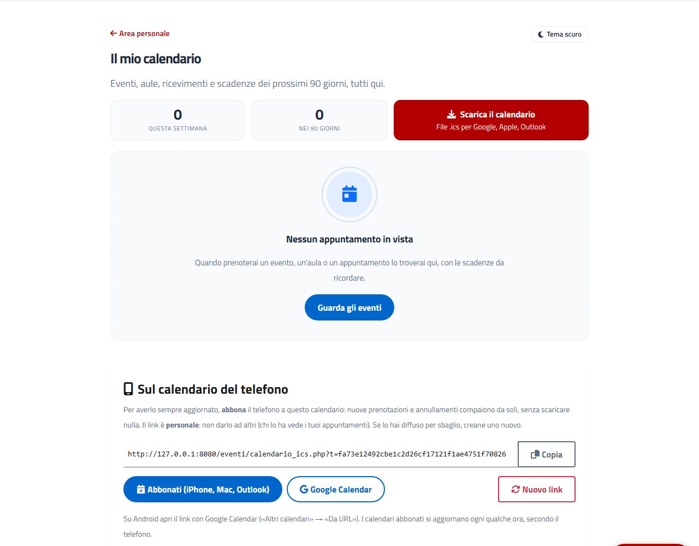
calendario.php → CalendarioPersonale, calendario_ics.php.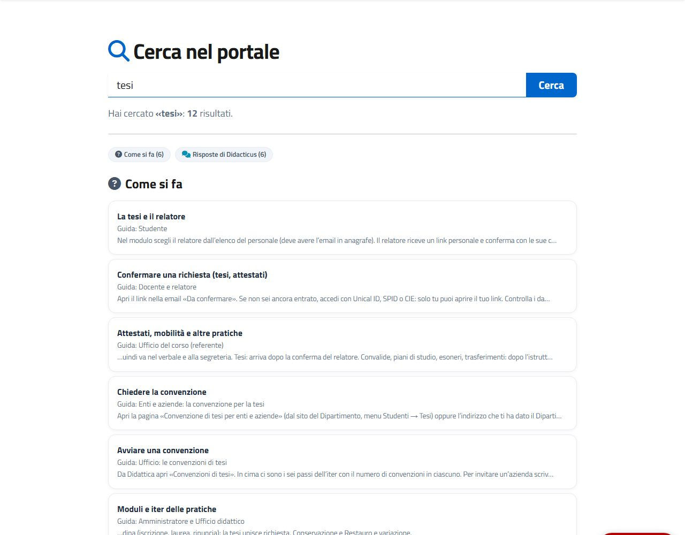
ricerca.php → RicercaGlobale.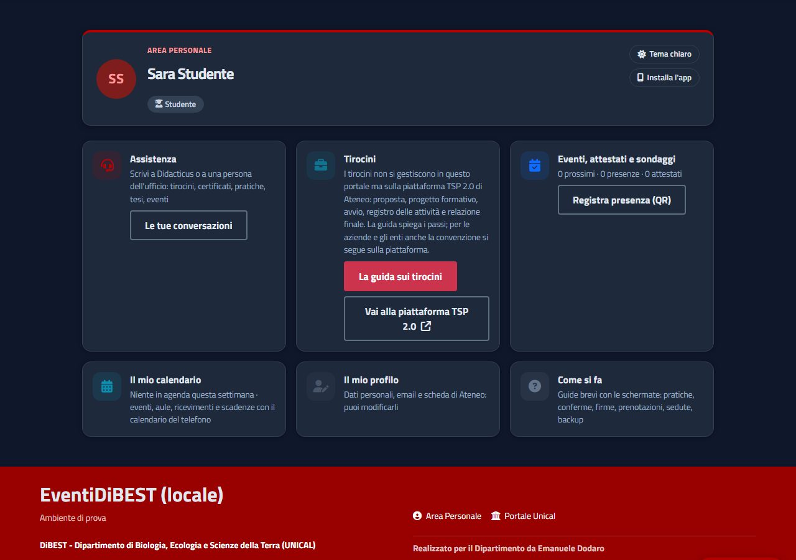
assets/css/portale-ui.css, html[data-tema="scuro"].Prove
strumenti/prove/oop/calendario.php e pagine_calendario.php (voci, .ics, abbonamento, riepilogo, ricerca, libreria di stile, pagine, manifest).
14Job pianificati (cron)
Quattro script, avviabili da riga di comando o via URL con CRON_KEY (≥ 16 caratteri).
| Script | Cosa fa |
|---|---|
cron_background.php | Passo principale: auto-archiviazione, email post evento, promemoria elenco studenti, attestati delle classi, verifica/promemoria/avvisi/scadenze delle convenzioni, documenti FSL, valutazioni FSL, conservazione dei dati, riepilogo «Da fare per te» (RiepilogoPersone::cron()), convenzioni di tesi, controllo notturno del sito, aggiornamento anagrafe di Ateneo. |
cron_attestati.php | Invio degli attestati. |
admin/cron_reminders.php | Promemoria agli iscritti (prossime 72 ore) e, tramite ServizioPromemoria, quelli dei moduli registrati con le interfacce PromemoriaRisorse e Pianificati: prenotazioni di risorse, lista d'attesa (scala()), scadenze delle risorse, pratiche ferme e solleciti di firma. |
admin/cron_backup.php | Esporta il database (.sql.gz) e i file (.zip), copia sul NAS, invia la copia cifrata del DB; poi VerificaBackup rilegge tutto. |
- La sospensione dei promemoria (
SospensionePromemoria) non segna nulla come inviato: alla riattivazione il cron rimanda ciò che è ancora dovuto. - Conservazione (variabili
CONSERVAZIONE_*_MESI): log, audit, prenotazioni anonimizzate, account inattivi, lettere di incarico, convocazioni. - Ripristino:
php strumenti/ripristina_backup.php verifica|prova|file|database.

admin/sistema.php): stato del controllo notturno, backup, prova email.15Sicurezza
Difesa in profondità, con le scelte che contano per un portale universitario.
Input e output
Prepared statement ovunque; output HTML sempre codificato; dati JS in json_encode; colori validati prima degli stili; QR letti mai aperti come link.
Sessione e CSRF
Cookie Secure/HttpOnly/SameSite=Lax; token CSRF su ogni POST; rigenera() all'accesso; dopo «Esci» nessun accesso SSO automatico.
Header
CSP in config.php, HSTS, X-Frame-Options, X-Content-Type-Options, Referrer-Policy; librerie con SRI SHA-384.
Permessi
Ogni azione verifica che evento, turno o pratica appartengano all'area o all'ufficio dell'utente; cron solo da CLI o con CRON_KEY.
File
uploads/, .env e cartelle interne negati dal web server; download solo da pagine che controllano il permesso.
Anti-abuso
Rate limit per IP, CAPTCHA interno, campo trappola; limite ai tentativi di password sui verbali.
Privacy
Nessuna connessione a terzi (font e librerie locali); IP anonimizzati nei registri dei verbali; conservazione e anonimizzazione automatiche.
Segreti
Solo nel .env (mai in git): DB, chiavi, Aruba, backup. Password SMTP cifrate nel database.
16Front-end e asset
Rendering lato server con Bootstrap; JavaScript solo dove serve.
| File | Ruolo |
|---|---|
assets/css/pannello.css, assets/js/pannello.js | Stile e comportamenti del pannello (menu a gruppi richiudibili, «?» con le guide) |
campi-pratica.js, campo-scuola.js, ricerca-personale.js, decisioni-pratica.js | Campi guidati dei moduli (catalogo insegnamenti, scuola del Ministero, ricerca nell'anagrafe, decisioni di seduta) |
qrcode-generator, html5-qrcode | QR generati nella pagina e scanner del check-in, locali con SRI |
assets/vendor/…/pdf.js | Visualizzatore dei verbali (PDF.js 3.11.174, Apache-2.0) |
sw.js, manifest.json | PWA: in cache solo le librerie statiche; le pagine arrivano sempre dal server |
- Eventi personalizzati: il selettore delle persone emette
persona-sceltasul form che lo contiene (detail.id), usato per uffici, responsabili, abilitazioni. data-confirmsu pulsanti e form apre una conferma prima dell'invio.- Pagine pubbliche che non devono usare la sessione SimpleSAML (verbali) definiscono
PAGINA_SENZA_SSO.

admin/testata.php, WidgetHome).
campi_json / iter_json.17Test, ambiente locale e strumenti
La rete di sicurezza sono le «prove»: girano su un database usa-e-getta e, in locale, anche contro le pagine reali.
| Cosa | Come | Note |
|---|---|---|
| Prove del portale | php -d extension=zip -d extension=gd -d extension=intl strumenti/prove/esegui.php | Crea il database eventi_prova da database/schema.sql + migrazioni; un file per modulo in strumenti/prove/oop/; ≈ 1.600 verifiche; esce 1 se una fallisce. Con l'ambiente locale acceso prova anche le pagine via HTTP |
| PHPUnit | composer test | 70 file in tests/; DatabaseDiProva crea solo le colonne usate dal test; doppi in tests/Doppi (MailerFinto, OrologioFisso); trait ConDirezione per i test che servono il Direttore |
| Ambiente locale | bash strumenti/locale/avvia.sh | Avvia MariaDB e il server PHP su 127.0.0.1:8080 con il database eventi_locale; router.php offre /__accesso?u=ID (accesso di prova), /__email (email intercettate), /__cron |
| Dati di dimostrazione | strumenti/locale/scenario_*.php | Persone, uffici, pratiche in ogni punto dell'iter, convenzioni, verbali; collaudo_*.php porta ogni iter fino in fondo |
| Schermate | strumenti/locale/schermate*.py|php | Chrome headless (CDP) con accesso di prova; sono le immagini di guide, presentazioni e di queste mappe |
| Presentazioni e PDF | strumenti/locale/presentazioni.py, genera_pdf.sh | PDF delle guide per ruolo e degli iter con Chrome --print-to-pdf |
| Controlli sul server | strumenti/prove_server.sh, verifica_sito.sh | Versione PHP/estensioni, php -l su tutti i file, cartelle scrivibili, prove su un DB dedicato |
// Un test d'integrazione tipico (PHPUnit)
final class FirmaDirettoreTest extends FslBase
{
use ConDirezione; // tabelle uffici + impostaDirettore()
public function testIlDirettoreVieneDallaDirezione(): void
{
$this->impostaDirettore('Mario Bianchi', 'M@Y.IT', 'bnchmr60a01h501x');
$this->assertTrue($this->firma()->puoFirmare(['id' => 5, 'email' => 'M@Y.it']));
}
}18Rilascio e operazioni
Il deploy è manuale e verificabile: si costruisce un pacchetto dall'ultimo commit e lo si estrae sul server.
# 1. sul PC: pacchetto con tutti i file committati (senza .env, uploads, cache, tests, strumenti, documentazione)
bash strumenti/crea_pacchetto.sh # -> aggiornamento_completo.tgz (+ SHA256SUMS_pacchetto.txt dentro)
# 2. sul server
cd /opt/lampp/htdocs/didattica
tar -xzf aggiornamento_completo.tgz
sha256sum -c SHA256SUMS_pacchetto.txt | grep -v ": OK" # non deve stampare nulla
find . -name '*.php' -not -path './uploads/*' -not -path './cache/*' -print0 | xargs -0 -n1 php -l | grep -v "^No syntax"
rm -f cache/schema_v*.ok # se serve: forza il ricalcolo dello schema alla prossima richiesta- Dopo il caricamento basta aprire una pagina:
assicura_schema()aggiorna database e dati di partenza. install.phpè l'installer guidato (da eliminare dopo l'uso). Il passaggio da/eventia/didatticaè automatizzato dastrumenti/migra_a_didattica.sh.- Il
.envcontiene i segreti e non si sovrascrive mai;.env.exampleelenca le variabili.
19Come aggiungere una funzione
La ricetta per un nuovo modulo o una nuova tabella, seguendo i pattern esistenti.
- Tabella: aggiungi il
CREATE TABLE IF NOT EXISTSinDefinizioni::tabelle()(o la colonna incolonne()) e alzaMigrazioni::VERSIONE. I dati di partenza vanno indatiDiPartenza(), con una guardia di idempotenza. - Repository in
src/<Modulo>/: costruttore conDatabase, metodi con query preparate che restituiscono array. - Servizio: regole e validazioni; restituisce
?stringd'errore o i dati; riceve repository, notifiche eOrologio(mainew DateTimediretto, per testare). - Notifiche: una classe che usa
MailereSito::urlBase()per i link. - Pagina:
require_once 'middleware.php',App::get(Servizio::class), azioni POST concsrf_verify+ redirect, poi HTML. Se serve il pannello, usaadmin_header.phpe registra la pagina inPAGINE_MODULOe nel menu. - Prove: un file in
strumenti/prove/oop/<modulo>.phpconprova(condizione, "descrizione")e, se serve, un test PHPUnit conDatabaseDiProva. - Documenti: aggiorna
README.md, il piano e la mappa dei file da caricare; costruisci il pacchetto e verifica consha256sum -c.
ALTER fuori da Definizioni; non usare App::get() dentro src/; non dimenticare csrf_field() nei form.20Appendice
Variabili del file .env (nomi, mai i valori)
| Gruppo | Variabili |
|---|---|
| Database | DB_HOST, DB_USER, DB_PASS, DB_NAME |
| SSO | SIMPLESAML_PATH |
| Indirizzi e cron | URL_SITO, CRON_KEY |
| Backup | BACKUP_NAS_PATH, BACKUP_NAS_GIORNI, BACKUP_EMAIL, BACKUP_EMAIL_FREQUENZA, BACKUP_PASSWORD |
| Conservazione | CONSERVAZIONE_LOG_MESI, _AUDIT_MESI, _PRENOTAZIONI_MESI, _UTENTI_MESI, _INCARICHI_MESI, _CONVOCAZIONI_MESI |
| Tutorato e firme | INCARICHI_SOLO_SPID_CIE, ARUBA_ARSS_URL, ARUBA_ARSS_DOMINIO, ARUBA_ARSS_CERTID, CIFRATURA_CHIAVE, FIRME_GIORNI_SOLLECITO |
| Riepiloghi | RIEPILOGO_PERSONE |
Glossario
| Termine | Significato |
|---|---|
| Area | Una pagina del portale (riga di pagine_eventi) con eventi o risorse e il suo aspetto |
| Modulo (del pannello) | Una delle cinque sezioni del pannello (MODULI_PORTALE) |
| Modulo (di pratica) | Una richiesta online costruita da pannello (didattica_moduli) |
| Iter | La sequenza di passi (uffici, firme, conferme) di un modulo o di una convenzione |
| PAdES | Firma digitale incorporata nel PDF (il PDF firmato), accettata al posto del .p7m |
| Facciata | Funzione procedurale che inoltra a una classe |
| Strangler fig | Strategia di sostituzione graduale del codice vecchio con quello nuovo |
| op_id | Numero stabile di una persona come operatore della Didattica, quello salvato in pratiche.assegnata_a |
| Direttore in carica | Chi firma ora: il Direttore o, con «Direttore assente», il vice |